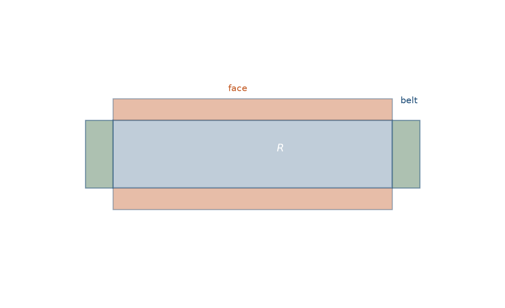
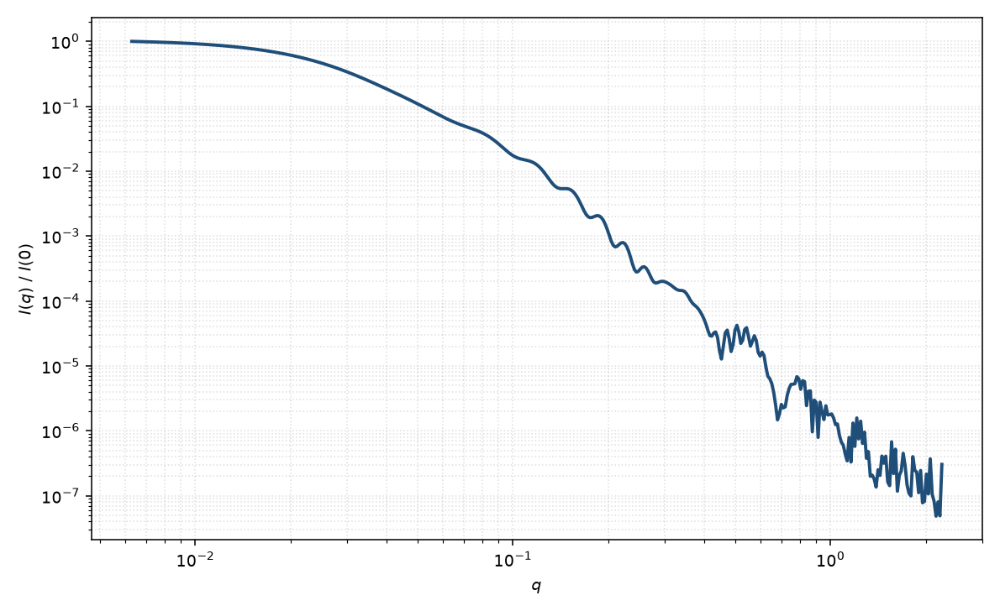

核壳双层盘
core-shell bicelle
适用场景
核壳双层盘（bicelle）描述圆盘状双层：疏水核芯、上下亲水面（帽）以及边缘腰带。适用于磷脂/去垢剂双层盘、纳米盘，以及短轴比 $L\ll 2R$、径向与轴向衬度都分段的盘状聚集体。
中间 $q$ 接近薄盘的 $q^{-2}$；高 $q$ 出现双层厚度振荡。腰带与面帽衬度不同时，不能退化成单一核壳圆柱。
若盘面堆叠成柱，应改用堆叠圆盘或层状堆叠，而不是给单盘加结构峰。
物理图像
几何是短圆柱的核壳推广：核半径 $R$、核厚度 $L$，面帽厚度 $t_{\mathrm{face}}$，腰带厚度 $t_{\mathrm{belt}}$。振幅为核、面与腰带三块均匀区圆柱振幅的衬度加权和，再对盘法向与 $\mathbf{q}$ 的夹角取向平均。
核、面、带三区的振幅相加，是 Pedersen 综述里核壳圆柱/盘构造在短轴极限下的用法：径向用 $J_1$，法向用 $\mathrm{sinc}$，再对取向平均。
示意图


核心公式
出发点
稀释、取向无规的分层盘，相干散射振幅是衬度对平面波相位的体积分
$$F(\mathbf{q})=\int_V \Delta\rho(\mathbf{r})\,\mathrm{e}^{i\mathbf{q}\cdot\mathbf{r}}\,\mathrm{d}^3r.$$核壳双层盘把体积分成核、上下面帽与边缘腰带三块均匀区。每一块都是有限圆柱（或圆柱之差），因此每块的振幅仍是轴向 $\mathrm{sinc}$ 乘径向 $2J_1(x)/x$。
推导
均匀圆柱核
$$F(q,R,H,\alpha)=\pi R^2 H\cdot\frac{2J_1(qR\sin\alpha)}{qR\sin\alpha}\cdot\frac{\sin(qH\cos\alpha/2)}{qH\cos\alpha/2}.$$令核为半径 $R$、厚度 $L$；面帽把轴向厚度扩到 $L+2t_{\mathrm{face}}$、半径仍为 $R$；腰带再把半径扩到 $R+t_{\mathrm{belt}}$、厚度与外面相同。按衬度叠加：
$$A(q,\alpha)=(\rho_{\mathrm{core}}-\rho_{\mathrm{face}})F(q,R,L,\alpha)+(\rho_{\mathrm{face}}-\rho_{\mathrm{belt}})F(q,R,L+2t_{\mathrm{face}},\alpha)+(\rho_{\mathrm{belt}}-\rho_{\mathrm{solv}})F(q,R+t_{\mathrm{belt}},L+2t_{\mathrm{face}},\alpha).$$面帽主要改沿法向的 $\mathrm{sinc}$；腰带改径向 $J_1$。$q\to 0$ 时 $A(0)$ 等于各区衬度乘体积之和。粉末平均
$$P(q)=\frac{\displaystyle\int_0^{\pi/2}|A(q,\alpha)|^2\sin\alpha\,\mathrm{d}\alpha}{\displaystyle\int_0^{\pi/2}|A(0,\alpha)|^2\sin\alpha\,\mathrm{d}\alpha}.$$稀释强度 $I(q)=n\langle|A|^2\rangle+B$。腰带与面帽衬度都退到溶剂时，回到短圆柱（盘）。
低 $q$ 与渐近
盘状几何 $L\ll 2R$：$R_g^2$ 以盘半径为主（量级 $R^2/2$），厚度只给 $L_{\mathrm{tot}}^2/12$ 量级的小修正。Guinier 在 $qR_g\lesssim 1$ 可用。
中间区接近薄盘 $q^{-2}$。更高 $q$ 出现双层厚度振荡，第一组法向极小约在 $q\sim 2\pi/L_{\mathrm{tot}}$ 与径向 Bessel 极小的混合。大 $q$ 尖锐界面给出 Porod $q^{-4}$。
参数表
| 参数 | 符号 | 含义 | 单位 | 典型范围 |
|---|---|---|---|---|
| 盘半径 | $R$ | 疏水核的径向半径 | Å 或 nm | 20–500 Å |
| 核厚度 | $L$ | 疏水核沿法向的厚度 | Å 或 nm | 20–50 Å（脂双层） |
| 面帽 / 腰带厚 | $t_{\mathrm{face}},t_{\mathrm{belt}}$ | 头基层与边缘带厚度 | Å | 5–20 Å |
| 各区 SLD | $\rho_{\mathrm{core}},\rho_{\mathrm{face}},\rho_{\mathrm{belt}}$ | 核、面、带的散射长度密度 | Å$^{-2}$ | 由脂质组成 / 氘代 |
| 取向角 | $\theta,\phi$ | 盘法向相对光束（二维） | 度 | 磁场可取向 |
| 标度 / 本底 | $\mathrm{scale}$, $B$ | 前置因子与本底 | 与强度单位一致 | 实验相关 |
拟合注意
半径与腰带厚、三套 $\rho$ 严重简并。中子对比（氘代链 / 头基 / 溶剂）是解开剖面的正途；单对比 SAXS 往往只能约束厚度与一个有效半径。
取向：快翻滚 bicelle 在溶液中接近粉末平均；磁场取向的向列相必须拟合 $\theta$ 分布，否则会把取向峰误认为堆叠。
多分散主要在盘半径；厚度多分散抹平双层 Bragg 样振荡。磁性：磷脂盘通常无磁衬度；掺镧系离子或磁颗粒时须单独给磁 SLD，且磁取向轴常沿盘法向。
相近模型
参考文献
- Guinier, A.; Fournet, G. Small-Angle Scattering of X-rays. Wiley: New York, 1955.
- Pedersen, J. S. Analysis of small-angle scattering data from colloids and polymer solutions: modeling and least-squares fitting. J. Appl. Cryst. 1997, 30, 339–354. DOI: 10.1107/S0021889897002532